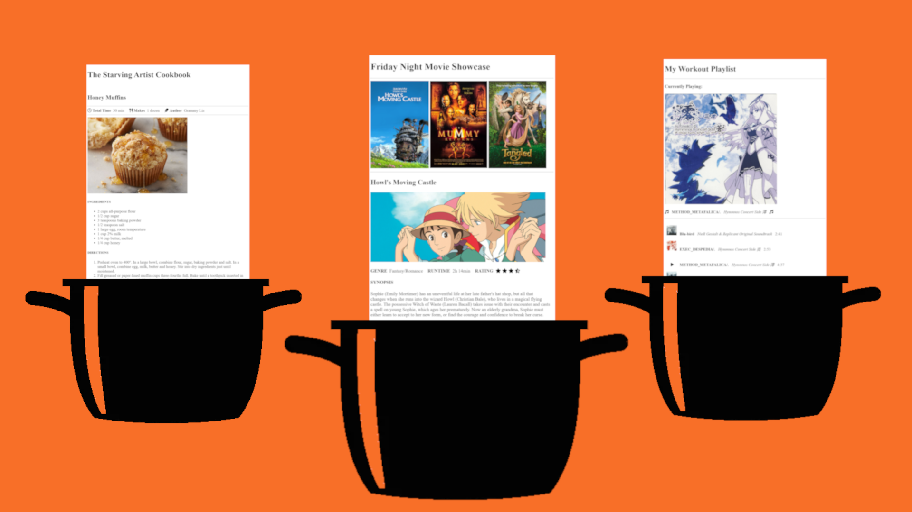

*Note: It is imperative that all of your coursework throughout your time here at F.I.R.S.T. be saved on an external hard/flash drive from now through graduation. You will be referencing your work again in the future to be added to your portfolio, so we expect you not to delete any of your work, including working files.*

OBJECTIVES:
-
- Showcase all the HTML tools you've learned this past week (along with some new ones)
-
Select ONE (1) of the following three (3) options as the theme for your project this week and build it:
OPTION 1 - Cookbook [example]
-
-
- Create a web page that contains at least three (3) recipes of your choosing
- Each recipe should contain at least:
- one (1) image of the completed recipe
- an Ingredients section (<ul> element recommended)
- an Instructions section (<ol> element recommended)
OPTION 2 - Movie Showcase [example]
-
-
- Create a web page that showcases at least three (3) movies
- Include a movie poster image for each movie (portrait dimensions recommended)
- Each movie showcase should contain at least:
- an image representing the movie (landscape dimensions recommended)
- a movie synopsis
OPTION 3 - Music Playlists or Album Listings [example]
-
-
- Create a web page that shares at least three (3) music playlists OR album listings
- Each music playlist/album listing should include at least:
- a featured image of the "currently playing" track or album cover
- a list of tracks included in the playlist or album. Each track should include:
- a track name
- the album name or artist
- the track length
NEW CONCEPTS WE'LL BE USING:
HOW TO COMPLETE:
This project is meant to be the culmination of everything you've learned so far about HTML. It is going to be a more freeform assignment than past exercises, in that the requirements are relatively minimal, meaning that you have a lot of freedom to play around with HTML and express yourself!
-
- In Visual Studio Code, duplicate your code-skeleton project folder inside of your repository folder, and rename the duplicate "html-potluck"
- We're calling it a "potluck" because everyone's project is going to be different, and you never know what you'll find at a potluck!
- Select one of the options from the OBJECTIVES section above, and build it according to the requirements for that project theme.
- NOTE: the examples provided for each option are just that: examples. You do not have build your project in the same way; you have complete creative freedom so long as you meet the base requirements.
TIPS
-
-
- Remember the difference between "inline" and "block" elements: inline elements sit side-by-side with text and other inline elements, whereas block elements start a new line for their content. So if you want content side-by-side, you'll probably want to use inline elements like <b>, <i>, and <img>
- To space out content vertically, you can use block elements or line break elements (<br>). Line break elements in particular will be handy if you want to add a lot of vertical space.
- However, be aware that doing so is rather hacky; we will learn a much better way to add vertical spacing once we learn how to add CSS to our page, so this method of adding vertical space will only be acceptable for this project.
- To space out content horizontally, we can write a little hack by taking advantage of something known as an HTML Entity; the recommended entity for this project is the whitespace character entity, which is (the letters are short for "non-breaking space").
- When this weird looking set of characters is inserted into HTML, it will force a space to render in your text on the page (or multiple spaces, if you copy/paste the entity multiple times). This is useful because the browser will generally ignore any extra whitespace you try to add in your code.
- Try it out! Add to your HTML code multiple times and watch spaces be injected into your preview!
- However, similar to the previous tip above, this is also considered relatively hacky, and we will learn a much better way to add horizontal spacing once we learn how to add CSS to our page, so this method of adding vertical space will only be acceptable for this project.
CHALLENGE
You may have noticed that the examples shown for each option include tiny little images known as "icons".
If you'd like to include similar icons in your submission, you can take advantage of something called an "icon library". Learn more by checking out the demo code below!
Icon Library (Font Awesome) Demo Code
HOW TO SUBMIT:

-
- SAVE ALL OF YOUR WORK BEFORE PROCEEDING (inside Visual Studio Code)
- Open your Github Desktop app and commit and push any changes you made in the project folder
- Go to github.com in the Google Chrome browser and ensure the changes to your project folder were "pushed" up to your github.com repository
- Open the Github Pages site (Settings -> Pages -> Visit site)
- or alternatively, go to the Environments/Deployments section of your repository page, click "github-pages", and then click the most recent deployment
- Add your project folder name at the end of your URL
- Open the link to your new webpage for the project.
- Confirm it actually works before you submit it!!!
- Copy the URL in the address bar and submit it to receive credit for this assignment.
- Example URL: http://username.github.io/code-skeleton/
- This example assumes you followed the initial setup instructions correctly; if you deviated or made any mistakes, your URL may look a little different